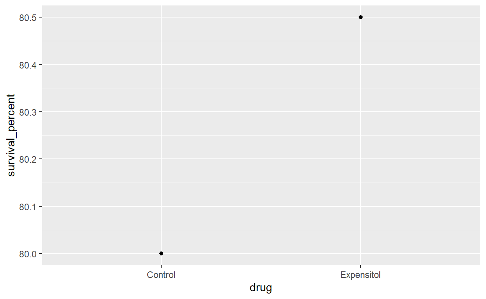
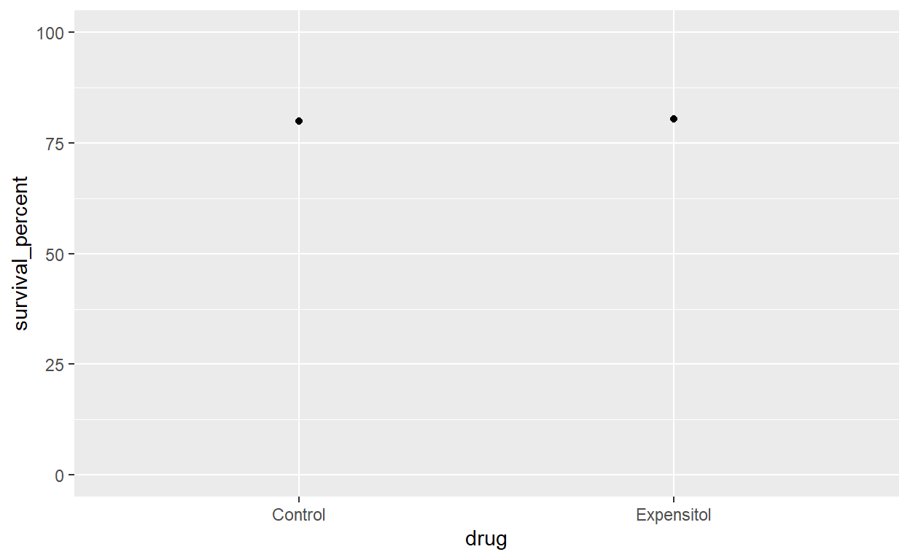
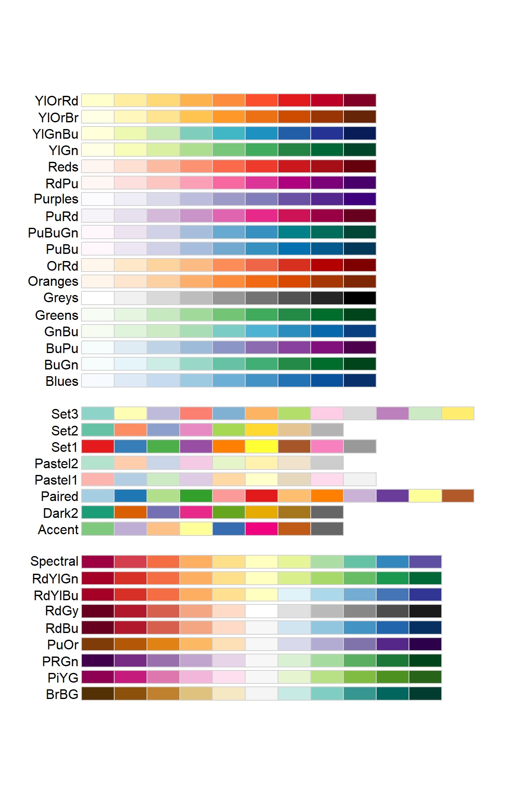
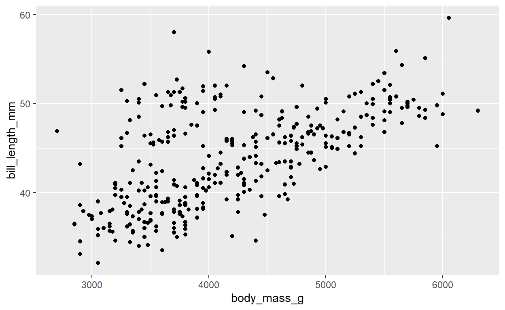
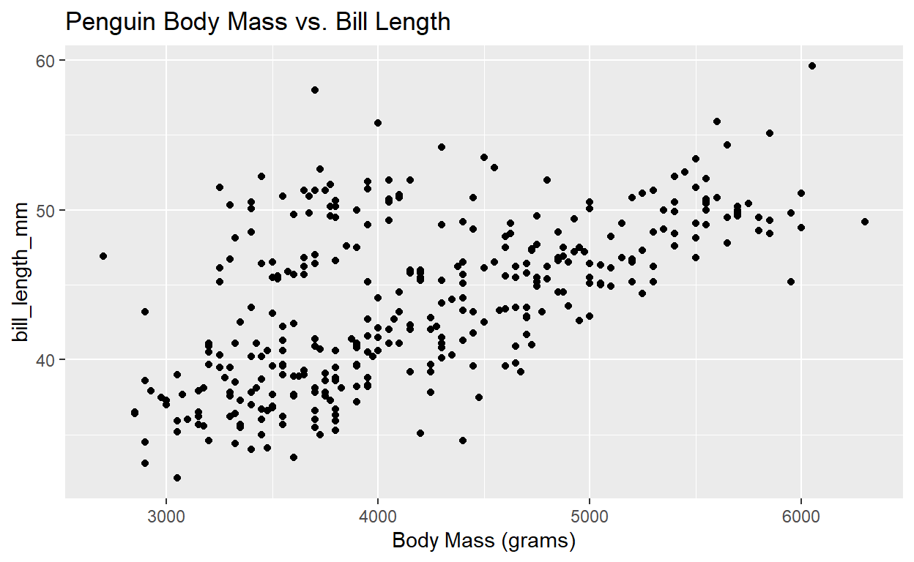

Intro and Setup
First as usual we need to load a few packages and datasets (you’ll
also need to install five more packages - gapminder,
ggridges, ggthemes, RColorBrewer,
and hexbin - but pacman::p_load() should take
care of that for you. Make sure to run this in your own script
as you follow along!
pacman::p_load(tidyverse, palmerpenguins, gapminder, ggridges, ggthemes, RColorBrewer, hexbin)
data(mpg)
data(diamonds)
data(penguins)
data(gapminder)Explore gapminder a bit using the techniques you’ve
already practiced. It’s a dataset of some basic information about a
bunch of countries over time.
#Explore gapminder - write your own code belowVisualizing Two (or Three) Variables
Oftentimes when you get data you want to look at the relationship between two (or more) variables. Let’s take a look at some ways you can do this and the different techniques for continuous vs. categorical variables.
Two Continuous Variables
Let’s ask a seemingly-easy question: Do bigger penguins tend to have longer bills? A classic way to look at this - the relationship between two continuous variables - is a scatterplot.
Scatterplots
Write the code for a basic scatterplot below (you should be able to copy-paste from an earlier tutorial, as all great programmers do):
#A simple scatterplot of body mass vs. bill lengthWhat do you notice about the relationship between bill length and body mass? Does bill length increase or decrease with increasing body mass? What does that relationship look like? Do there seem to be any outliers?
It looks sort of linear but with a lot of variation. There seems to be a particular group near the upper left that’s off from the rest of the main line. What could that be? Think for a moment before looking below.
Adding a Third Variable
What if that weird outlier group is a different species?
We could add a third variable, such as species, to this
chart using colors, shapes, facets, or other approaches. Modify your
scatterplot above to color and shape your points by species:
#A simple scatterplot, but with the points colored and shaped by speciesThat adds a lot of information! Does the relationship look tighter within each species than when we look at all penguins together? Which relationship are you actually most interested in? Whether, across an arbitrary mix of three species of penguins, bigger bodies mean larger bills? Or whether, within Adelie, Chinstrap, and/or Gentoo penguins, bigger bodies mean larger bills?
I’d argue the latter is more meaningful. Let’s continue with that. What does the relationship look like within each species?
Smoothing Lines
Maybe we could try fitting a straight line to the data for each species to describe the relationship, since that looks plausible (although there’s quite a bit of variation).
#A scatterplot with a line for each species
ggplot(data = penguins, mapping = aes(x = body_mass_g, y = bill_length_mm,
color = species, shape = species)) +
geom_point() +
geom_smooth(method = "lm") # Specifies we want a straight lineNote now that we have two geoms (chart type layers), so we made what aesthetics we could be global rather than local to avoid typing them twice.
In the code above, geom_smooth() adds a trend line to
our scatterplot data from geom_point(). You could also just
print the line without the scatterplot, but unless there’s too much data
to plot I always prefer to see the underlying data itself.
This geom comes with one key additional argument:
method =. It has four main options:
method = "lm": “lm” stands for linear model. Essentially, create the smooth line with linear regression. By default this will be a straight line, as above, unless you also explicitly define anotherformula =argument.The default
formula =argument isformula = y ~ x, meaning a straight line of the form y = b0 + b1x, where b0 is a y-intercept and b1 is the slope associated with x.You could also specify
formula = y ~ x + I(x^2)which would fit a quadratic curve of the form y = b0 + b1x + b2x2- What’s that funny
I()? This tells R to interpret something “as-is” rather than trying to do something else with it. Here we want R to takex^2as “x squared” rather than what R would typically do with^in a formula, which is complicated and not something we need to get into right now.
- What’s that funny
You can also specify higher-degree polynomials or other functions like
formula = y ~ log(x).
method = "loess". This stands for “LOcally Estimated Scatterplot Smoothing” and produces more flexible curves that are more “responsive” to the data. So where our use ofmethod = "lm"above forced the trend line to be a straight line,method = "loess"can look like anything. This is the default method for data with < 1,000 observations.method = "gam". This stands for “Generalized Additive Model” and, like LOESS, produces more flexible curves that are more “responsive” to the data than “lm.” LOESS and GAMs are mathemtically different and often yield somewhat different results, so sometimes it’s useful to compare the two. This is the default method for data with > 1,000 observations.- Irritatingly, you also need to specify
formula = s(x, bs = "cs")to explicitly specify you want a GAM smoother rather than a straight line, which it will give you by default if you try and run it on data with < 1,000 observations.
- Irritatingly, you also need to specify
method = "glm". This stands for “generalized linear model.” Don’t worry about it right now; it requires a greater understanding of statistics than many of you may have right now!
Challenge: Above we forced the relationship between bill length and body mass within each species to be described by a straight line. But maybe it isn’t really linear; try fitting LOESS and GAM models instead. Compare your results. Is the linear model “close enough” for you in this case? Which one would you choose to present in an analysis?
#A scatterplot with a line for each species
ggplot(data = penguins, mapping = aes(x = body_mass_g, y = bill_length_mm,
color = species, shape = species)) +
geom_point() +
geom_smooth(method = )Line Graphs
Line graphs are great, among other situations, when one of your
continuous variables is time-based. Here’s an example of a simple one
using the gapminder data.
# Pick just a few countries so we don't try to plot all 142.
# Don't worry about the details of this code right now
gap_line <- filter(gapminder, country %in% c("Australia", "India", "China"))
#A line graph
ggplot(data = gap_line, mapping = aes(x = year, y = gdpPercap, shape = country)) +
geom_line() +
geom_point() # Adds points to the lineOne thing that’s important to note for line graphs is you typically
need to use a grouping aesthetic if you have more than
one observation at a given time (or other x-value). For example, the
gapminder data has one measure of gdpPercap in
1987 for every country. Line graphs can’t deal with that, so you have to
tell them to plot one line per country by specifying a grouping
aesthetic like color = country,
shape = country, or simply
group = country.
Challenge: Try modifying the code above to plot a line graph with: a.) a different shape and color for each country; b.) the same shape and color for each country, but still one line per country (that is, grouped by country).
Then see what happens when you remove all of them.
One Continuous and One Categorical Variable
Here you have a lot of visualization methods to choose from, but they
all boil down to taking a univariate continuous visualization and either
a.) using a grouping aesthetic (like
color, fill, or shape) to
sub-divide them by the levels of a categorical variable on the same plot
or b.) using facets to print one sub-plot for each
level of the categorical variable.
Frequency Polygons
Let’s look at the distribution of body mass by penguin species.
# Frequency polygon by species
ggplot(data = penguins, mapping = aes(x = body_mass_g, color = species)) +
geom_freqpoly() Here the groups (species) are close to equal in size. But what if you
have major differences? Let’s go back to our diamonds data
and look at the distribution of price vs. cut.
# Write the code for a frequency polygon plot of price, colored by cutThe distributions are a little hard to differentiate because the
relative heights. Just based on the number of diamonds the “ideal” cuts
dwarf all the others, making the others’ curves look flat. Instead we
could standardize them all to the same height by modifying our code
slightly to add a non-default y aesthetic:
# Frequency polygon by cut, standardized
ggplot(data = diamonds, mapping = aes(x = price, y = after_stat(density), color = cut)) +
geom_freqpoly() What the heck is after_stat(density)??? It’s a
computed variable that geom_freqpoly()
automatically creates behind the scenes. It standardizes all the counts
in each group so that the area under every curve will be 1.0.
Histograms
Let’s look again at the distribution of body mass by penguin species.
Unfortunately, as you hopefully recall, geom_histogram()
has some weird behaviors when you try and plot all the groups on the
same graph, and they’re a bit tricky to fix. Instead, why don’t we try
facetting?
# Histogram polygon by species - can you fill in the facet_wrap() function as instructed below?
ggplot(data = penguins, mapping = aes(x = body_mass_g, fill = species)) +
geom_histogram() +
facet_wrap() # Force 3 rows, one for each species, so plots display vertically rather than side-by-sideThat works! We can facet whenever we use a grouping aesthetic - it’s just a question of whether you want all your data displayed on one plot or a series of sub-plots.
Density Plots
These work pretty much like frequency polygons except they automatically standardize every curve to have the same area.
# Frequency polygon by species
ggplot(data = penguins, mapping = aes(x = body_mass_g, fill = species)) +
geom_density(alpha = 0.5) # If the densities overlap, make them partly transparent. Try tweaking alpha until you get a look you likeRidgeplots (Joyplots)
Ridgeplots display densities staggered vertically in
the same pane. You just need to specify the categorical variable as a
y aesthetic.
NOTE: These plots require you to install and load the
ggridges package! They aren’t built in to
ggplot2 itself. Here’s a simple example using
densities:
# Density ridgeplot by species
ggplot(data = penguins, mapping = aes(x = body_mass_g, y = species, fill = species)) +
geom_density_ridges(alpha = 0.5) You can also do ridgelines that look more like frequency polygons rather than densities, but it’s a little more complicated. We’ll skip it for now. Here are more details in case you’re curious.
One more thing: these are technically called ridgeplots in R, but you’ll see them referred to sometimes as joyplots. Why? The band Joy Division has an album cover that looks like this:

Why joyplots are called joyplots.
Boxplots
You can easily produce a boxplot for each level of a categorical
variable. Simply specify the categorical variable as the x
aesthetic.
# Boxplot by species
ggplot(data = penguins, mapping = aes(x = species, y = body_mass_g, color = species)) +
geom_boxplot() +
coord_flip() # I like to use this to display horizontal boxplotsRaincloud Plots
Getting multiple raincloud plots to display in a single pane with a grouping aesthetic is a little too complicated right now. But you can always facet them!
#Raincloud of flipper length
ggplot(data = penguins, mapping = aes(x = flipper_length_mm)) +
geom_density() +
geom_jitter(mapping = aes(y = 0), height = 0.001, width = 0) +
facet_wrap(~ species, nrow = 3)Two Categorical Variables
When you have categorical variables you have to count the number of observations in each category of each variable. Then you can either write that out in a data table or visualize those counts.
Bar Charts
Bar charts are probably the easiest visualization for two categorical
variables. We’ve already seen an example in our diamonds
data.
#A simple bar chart
ggplot(data = diamonds) +
# Try "position = fill" if you want proportions instead
geom_bar(mapping = aes(x = cut, fill = color), position = "dodge") This shows you the number of diamonds in each category of
cut and color.
If you want to more easily compare the distribution (proportions) of
colors across cuts, try using position = "fill".
Challenge: To compare the distribution of cuts across colors instead, switch their places in the code above.
Heat Maps
Another option is a heat map. The major trick here
is you have to tell R to first count the number of observations in every
combination of categories you want to look at using the
count() function.
#A heat map
ggplot(data = count(diamonds, cut, color), mapping = aes(x = color, y = cut)) +
geom_tile(mapping = aes(fill = n))Data Viz Chart Choice Summary
Here is a link to an excellent web page that goes through your options for visualizing all different types and combinations of variables much more thoroughly than I’ve done above. If you have some data and are trying to decide how to best visualize it, this site is an excellent way to generate ideas and make a good selection.
It also has some case studies of visualizing different types of data that may inspire you.
Finally, it includes an accounting of many common data viz errors and techniques for avoiding or correcting them!
Knowledge Check
Customizing Your Plots
There are endless ways you can customize your plots in
ggplot2. We’ll go through a few of the more common ones you
might encounter below. The Cookbook for R’s “Graphs”
section or the more detailed R
Graphics Cookbook by Winston Chang are handy references for more
details.
We’ll start with this graph:
#A simple scatterplot
ggplot(data = penguins, mapping = aes(x = body_mass_g, y = bill_length_mm,
color = species, shape = species)) +
geom_point()This graph isn’t as good as it could be. It lacks a title. The x- and y-axis labels look weird and are uninformative. Maybe you don’t like the colors, or where the axes start and end. We’ll work on improving this with our customizations below.
Titles, Subtitles, and Labels
You can (and usually should) add a brief descriptive title and/or a
subtitle to a chart. There are several ways to do this, but the one I
like is the labs() function, short for
labels, because it can be used for much more than
titles and subtitles.
#A simple scatterplot
ggplot(data = penguins, mapping = aes(x = body_mass_g, y = bill_length_mm,
color = species, shape = species)) +
geom_point() +
labs(title = "Penguin Body Mass and Bill Length by Species",
subtitle = "Palmer Station, Antarctica Long Term Ecological Research")Axis Titles
You can also customize your x- and y-axis labels or add a caption.
#A simple scatterplot
ggplot(data = penguins, mapping = aes(x = body_mass_g, y = bill_length_mm,
color = species, shape = species)) +
geom_point() +
labs(title = "Penguin Body Mass and Bill Length by Species",
subtitle = "Palmer Station, Antarctica Long Term Ecological Research",
x = "Body Mass (grams)",
y = "Bill Length (millimeters)",
caption = "Look at me! I'm a caption!")Challenge: Try changing the title, subtitle, axis titles, and caption values above to confirm how they change on the resulting plot.
Legend Position, Title, and Labels
Sometimes you may want to move the legend from its default position on the right to below the graph or somewhere else. This is especially true if you have long labels that compress the graph horizontally. Moving it to below the graph, of course, will slightly compress it vertically, though. It’s your choice which is better.
I also tend to think having a title on the legend is extraneous - the labels and chart title should make it clear what the values of legend are (e.g. different species of penguin).
Finally, we can manually change the values of our legend labels if we want. Make sure you have the right order by printing the plot with the automatic legend first, though.
We can make the first two these changes using the very flexible
theme() function, but for the third we have to annoyingly
manually change the labels for each aesthetic to which we’ve mapped
species (color and shape):
#A simple scatterplot
ggplot(data = penguins, mapping = aes(x = body_mass_g, y = bill_length_mm,
color = species, shape = species)) +
geom_point() +
labs(title = "Penguin Body Mass and Bill Length by Species",
subtitle = "Palmer Station, Antarctica Long Term Ecological Research",
x = "Body Mass (grams)",
y = "Bill Length (millimeters)",
caption = "Look at me! I'm a caption!") +
#Manually change our legend labels (make sure you have the right order!)
scale_color_discrete(labels=c("Adelie", "Chinstrap (the best!)", "Gentoo")) + #"_discrete" tells ggplot we're dealing with a categorical variable
scale_shape_discrete(labels=c("Adelie", "Chinstrap (the best!)", "Gentoo")) +
theme(legend.position = "bottom", # Move legend to bottom
legend.title = element_blank()) # Delete legend titleThe legend.title = argument probably looks confusing.
What is element_blank()??? Don’t worry about it for now.
Just know that in the theme() function, that’s how you
remove a text element (like a title) entirely.
Axis Limits
ggplot() tries to automatically choose sensible minimum
and maximum values for the x- and y-axis, but sometimes you’ll want to
change that.
One of the most common reasons I use this is to force the y-axis to
start at 0. A compressed y-axis is a very
common way people misleadingly present data. ggplot() will
unfortunately sometimes do this - not maliciously, just by
default. For example, consider the following (fictional)
example of the 5-year survival for prostate cancer when treated with a
new drug (Expensitol) or an older one (which we’ll call the
Control):

Wow, that looks like a huge difference, doesn’t it!? But look closely at the y-axis. How big is the difference in survival, really?
What if we used a less misleading y-axis, such as one forced to run from 0 to 100%?

Ah, now the groups look more equal and “Expensitol” looks less effective, doesn’t it? Always, always, ALWAYS check the y-axis of any graph you make or that anyone tries to show you. NEVER assume it starts at zero, or that what looks like a big difference actually is!
Now look back above. Does our penguin graph start at zero? Well, no.
Does it feel misleading to start around 30 mm? Honestly, in this case
probably not. It’s fine because we’re not trying to show a massive
variation in bill length, just the association between bill length and
body mass. But let’s set the y-axis to start at 0
anyway.
#A simple scatterplot
ggplot(data = penguins, mapping = aes(x = body_mass_g, y = bill_length_mm,
color = species, shape = species)) +
geom_point() +
labs(title = "Penguin Body Mass and Bill Length by Species",
subtitle = "Palmer Station, Antarctica Long Term Ecological Research",
x = "Body Mass (grams)",
y = "Bill Length (millimeters)",
caption = "Look at me! I'm a caption!") +
theme(legend.position = "bottom",
legend.title = element_blank()) +
ylim(0, NA)We accomplish this with the ylim() function. The first
number you pass is the minimum you want, and the second is the maximum;
we used NA to allow R to keep its default maximum. You can
modify the x-axis the same way with xlim().
The benefit of this is that now the variation in bill length - if that was something that you were interested in - now doesn’t look as misleadingly wide as if you made the bottom start at 30. But there’s also now a lot of wasted space on the graph, everything is compressed vertically, and the association between bill length and body mass is harder to see. So there are benefits and drawbacks to having the y-axis start at zero in this particular case, and I’m OK with either way.
Generally speaking, if you have a chart that relies on area - like a bar chart - your y-axis needs to start at zero. I would extend this rule to most graphs that are trying to make a comparison between two or more categorical groups. Line graphs and scatterplots - which are more often used to show relationships between two variables or trends over time - don’t have to include zero, and in some cases shouldn’t because zooming out too far can obscure important relationships. But there are always exceptions, so use your critical thinking to decide if a graph you produce - or consume - is using misleading axes. Drs. Carl Bergstrom and Jevin West have a really nice summary of these issues here.
Reordering Factors
By default factors, like species, are often ordered
alphabetically (or in another way you previously specified). Let’s
create boxplots of bill length by species:
# Boxplot by species
ggplot(data = penguins, mapping = aes(x = species, y = bill_length_mm)) +
geom_boxplot() You know what annoys me about this chart? The species aren’t in order from shortest to longest median bill length. Let’s fix that.
# Boxplot by species
ggplot(data = penguins) +
geom_boxplot(mapping = aes(x = reorder(species, bill_length_mm, FUN = median, na.rm = TRUE),
y = bill_length_mm)) You can see that the thing we changed was the x =
aesthetic. Let’s walk through that line of code. We asked R to reorder
the factor species, based on their bill length, using the
median bill length (rather than the mean or minimum or some
other measure) to do the ordering.
We also had to make sure to ask R to remove any NA values of
bill length first, using na.rm = TRUE. What happens if we
forget that bit? Try removing it!
1 Adelie and 1 Gentoo penguin have NA values for bill
length. Their median bill length becomes NA, and they are
automatically both considered bigger, and thus plotted to the
right of, Chinstraps. That doesn’t give us what we want! So we have to
explicitly tell R “hey, just take the median of those penguins whose
bill lengths we know, OK?”
We can also reorder the levels of a factor in our data to any order we want prior to plotting. We’ll talk more about that in a later tutorial, though.
Themes
Themes are different pre-made ways to visually present your graph. They alter things like background color, grid lines, and font sizes and types. They are very useful quick ways to make major changes to your graph without having to type the same long, specific, clunky code over and over again. Once you get more advanced you may even want to create your own themes!
ggplot2 has some common ones built in, like
theme_bw():
#A simple scatterplot
ggplot(data = penguins, mapping = aes(x = body_mass_g, y = bill_length_mm,
color = species, shape = species)) +
geom_point() +
labs(title = "Penguin Body Mass and Bill Length by Species",
subtitle = "Palmer Station, Antarctica Long Term Ecological Research",
x = "Body Mass (grams)",
y = "Bill Length (millimeters)",
caption = "Look at me! I'm a caption!") +
theme_bw()But even cooler is the themes that come installed with the
ggthemes package. Have you ever wanted to make a plot that
looks like one in the Economist? It’s easy!
#A simple scatterplot
ggplot(data = penguins, mapping = aes(x = body_mass_g, y = bill_length_mm,
color = species, shape = species)) +
geom_point() +
labs(title = "Penguin Body Mass and Bill Length by Species",
subtitle = "Palmer Station, Antarctica Long Term Ecological Research",
x = "Body Mass (grams)",
y = "Bill Length (millimeters)",
caption = "Look at me! I'm a caption!") +
theme_economist()OK, this particular graph looks ugly in the Economist theme. But what about FiveThirtyEight?
#A simple scatterplot
ggplot(data = penguins, mapping = aes(x = body_mass_g, y = bill_length_mm,
color = species, shape = species)) +
geom_point() +
labs(title = "Penguin Body Mass and Bill Length by Species",
subtitle = "Palmer Station, Antarctica Long Term Ecological Research",
x = "Body Mass (grams)",
y = "Bill Length (millimeters)",
caption = "Look at me! I'm a caption!") +
theme_fivethirtyeight()Hey that looks kinda cool! Plus now somebody might mistake you for one of the smart writers they’ve got over there.
You can explore some of the other options here.
Color Palettes
You may not like the default colors ggplot2 chooses
(usually called the “rainbow palette”). They are bad for showing
continuous data (gradients), may not be great for categorical data with
a natural ordering (for example, Low-Medium-High or
Mild-Moderate-Severe), may cause issues for those who are colorblind,
and may not show up well in black and white. We’ll look at two
alternatives.
First, the viridis scales built into
ggplot2. These are best for when you want to color a
continuous variable or ordered factor. In fact, you’ve already seen it
in diamonds because it’s the default for ordered factors in
ggplot2!
Second, the scales built into the RColorBrewer package.
Various options are nice for continuous, ordered, or non-ordered
categorical variables.
For a more thorough discussion of the proper use of colors in data viz, I recommended this blog post!
Continuous Variables
Let’s start with the default color scheme for a continuous variable:
ggplot(data = penguins, mapping = aes(x = body_mass_g, y = flipper_length_mm,
color = bill_length_mm)) +
geom_point()Eh, that’s OK. But let’s try the viridis color scale!
ggplot(data = penguins, mapping = aes(x = body_mass_g, y = flipper_length_mm,
color = bill_length_mm)) +
geom_point() +
scale_color_viridis_c(option = "viridis")I like that a bit better! Check the
?scale_color_viridis_c page, and under the “option”
argument you’ll see you actually have a few different variants of this.
Let’s try “magma.”
ggplot(data = penguins, mapping = aes(x = body_mass_g, y = flipper_length_mm,
color = bill_length_mm)) +
geom_point() +
scale_color_viridis_c(option = "magma")Do you like this better? Worse? It’s a matter of preference.
Categorical Variables
Note that we used scale_color_viridis_c() above because
we were mapping to a continuous (c) variable. To apply these same scales
to a categorical variable, simply use
scale_color_viridis_d():
ggplot(data = penguins, mapping = aes(x = body_mass_g, y = flipper_length_mm,
color = species)) +
geom_point() +
scale_color_viridis_d(option = "viridis")The RColorBrewer package, however, contains other
excellent scales for ordered and unordered categorical variables. These
were developed by experts to both be graphically attractive and to work
for colorblid folks. Let’s take a look at our options:
display.brewer.all()
Notice how these palettes are split into three blocks.
The first block is best for sequential data such as ordered factors that are constantly increasing or decreasing. These colors increase from lighter to darker. An example would be diamond cut grades.
The second block is best for qualitative data such as unordered categories like penguin species. These palettes don’t have any particular order.
The third block is best for diverging data. Think of a survey where you can answer Strongly Agree, Agree, Neutral, Disagree, or Strongly Disagree. Or political leanings. There’s an anchor in the center and the data get more extreme in either direction.
I’ll mostly leave you to play around with these on your own, but here’s an example of how you can specify a qualitative palette for penguin species. Try a few different ones until you find one you like!
ggplot(data = penguins, mapping = aes(x = body_mass_g, y = flipper_length_mm,
color = species)) +
geom_point() +
scale_color_brewer(palette = "Dark2") RColorBrewer will automatically choose the first N
categories of a sequential or
qualitative scale. It will automatically work from the
inside-out for diverging scales.
RColorBrewer palettes - at least sequential and
diverging ones - can also be used for continuous variables, but
they are more specially designed for categorical ones. You can use them
for continuous variables by using function
scale_color_distiller() instead. As the help page warns,
though, “your mileage may vary” (meaning you may get good or bad
results) depending on your specific case. Do not use qualitative scales
for continuous data.
Colors vs. Fills
Remember the difference between a color and a
fill. Both viridis and
RColorBrewer, annoyingly, have different functions for
each. Usually you simply replace “color” with “fill” in the function
name.
If you wanted to choose an RColorBrewer palette for a
fill aesthetic, for example, you would need to use
scale_fill_brewer().
Just keep in mind this is something you’ll probably mess up more than once. It’s a common error when plotting in R!
Custom Colors
You can also define custom color or fill scales for your graphs. I
usually advise against this because professionals have created the
viridis and RColorBrewer scales for a reason.
But check out the R Graphics Cookbook for more information if you find
yourself compelled to create your own scale!
Manual Customization Cheatsheet and Map
This all probably feels a little abstract and like a lot of very specific commands you have to memorize. First of all, you don’t have to memorize them - I look them up via, for example, Googling regularly.
But here is an
excellent map and cheatsheet that names and describes how to
manually alter any specific part of a ggplot (each of which has its own
obscure name in R-speak) using the theme() function. This
covers how to change titles, legends, axes, and backgrounds. We
discussed how to make some of the more common of these alterations
above, but others we haven’t:

A map and cheat sheet for altering different parts of a ggplot.
The themes we discussed above basically change a bunch of these
individual settings at once with a single command such as
theme_bw(), but if you want more fine-grained control to
alter specific elements of your plot individually, that’s where this
cheatsheet and the flexible theme() function come in
handy.
Knowledge Check
Dealing With Overplotting
Overplotting occurs when the same elements are plotted right over each other or are simply too close to differentiate. This most commonly happens with scatterplots with large numbers of data points or when plotting discrete data. There are several options for dealing with this, some of which you’ve already encountered.
Jittering
The first is “jittering” using geom_jitter(). Observe
what happens when we plot engine size vs. highway mileage in the
mpg dataset:
ggplot(data = mpg) +
geom_point(mapping = aes(x = displ, y = hwy))Because there are only a few possible values of displ
(engine size) we have some points plotted over one another.
geom_jitter() fixes that by automatically adding a little
bit of random noise in both directions:
#Try using geom_jitter() rather than geom_point()Notice now we can see each data point more clearly. It doesn’t badly affect our interpretation of the data, either; it just helps with visualizing it.
You can alter the amount of the jitter in the horizontal and vertical
directions with height and width arguments -
refer back to our attempt to create a raincloud plot in Tutorial 1.1.
But usually the defaults work fine unless you’re trying to do
something fancy like we were.
Alpha
You’ve already learned about alpha, too. It controls point
transparency. Setting it to a lower value can help with visualizing
overplotted data. Consider this example from diamonds:
#A simple scatterplot of just the first 5000 rows to simplify plotting (54K rows total)
ggplot(data = head(diamonds, 5000)) +
geom_point(mapping = aes(x = carat, y = price), alpha = 0.4)Challenge: Try dropping the alpha to different values to see how it helps with overplotting. Do you think it helps? Can you tell where most of the diamonds are really located now?
Hexbin Plots
The last strategy I’ll offer you is hexbin plots.
They’re simple to do in ggplot2, but you need to make sure
you load the hexbin package. They basically bin scatterplot
values into slightly-larger hexagons, then plot them with a color to
indicate how many points are in that bin. Here’s an example:
#A simple scatterplot of just the first 5000 rows to simplify plotting (54K rows total)
ggplot(data = diamonds) +
geom_hex(mapping = aes(x = carat, y = price))Do you see how that helps you see where the majority of diamonds are located better than our basic scatterplot?
Knowledge Check
Storing and Exporting ggplot Objects
Saving and Storing ggplots
Plots are stored just like any other object, such as a
data.frame. You can assign it to an object using code like
this, then come back to manipulate it later. Try running it in a script
of your own. Remember to load the penguins data first!
#Saving a plot
penguin_plot <- ggplot(data = penguins, mapping = aes(x = body_mass_g, y = bill_length_mm)) +
geom_point()You can print this object:
#Print your saved plot object
penguin_plot## Warning: Removed 2 rows containing missing values or values outside the scale range
## (`geom_point()`).
You can add to the saved plot object using +:
#Add a title, change the x-axis label, and re-print
penguin_plot2 <- penguin_plot +
labs(title = "Penguin Body Mass vs. Bill Length",
x = "Body Mass (grams)")
#Print your saved plot object
penguin_plot2## Warning: Removed 2 rows containing missing values or values outside the scale range
## (`geom_point()`).
You can also add new geoms or anything else this way.
Exporting a Plot
If you’re producing Quarto document you never have to worry about exporting a plot because it will simply display in-line with your code and explanatory text. But what if you need to export it for, say, a Powerpoint presentation?
The easiest way is probably ggsave().
We could save our penguin plot as a .png file, for example:
ggsave(filename = "C:/Users/elzat/Dropbox/QTM_150/Tutorials/0 - Basics/penguin_plot2.png",
plot = penguin_plot2)When you run this you’ll see it’s saved as a default size. You can
alter that by specifying new values in a width and/or
height argument.
If the text or points look too big or don’t quite fit in the exported
picture you can also try changing the scale argument from
its default value of 1. Counterintuitively, increasing
scale (e.g. specifying scale = 1.5) makes
everything look smaller; decreasing it makes everything look
bigger. Give it a try while exporting your own plot!
Knowledge Check
Summary
In this tutorial we covered some ways to plot the relationships between two (or three) variables, some methods for customizing plots, how to avoid overplotting, and how to save and export plots.
This concludes our unit on data visualization. Next up we’re going to move backwards a little bit and learn how to import our own data from outside R and transform it into the formats we need prior to analysis and visualization.